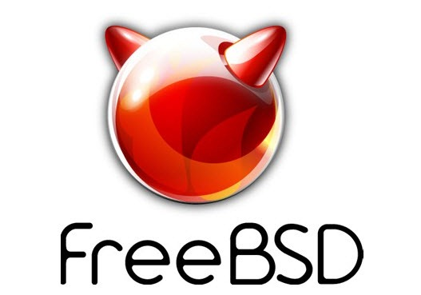

Primeiro de tudo: o FreeBSD não é Linux nem uma distro Linux, e sim, um *Sistema operacional* usado em servidores, desktops, e plataformas embarcadas. Sua segurança, networking, e recursos de armazenamento fizeram do Freebsd a escolha de diversos Sites muito conhecidos, como a Netflix. além das maiores empresas de tecnologia do mundo usarem Freebsd: Empresas que usam Freebsd:
- Apache
- Apple
- Dell
- Netflix
- Sony
- McAfee
Entre outros...
Por que usar o FreeBSD?
O Freebsd é um sistema operácional completo: o Linux é só o Kernel, que somado as ferramentas do projeto GNU, a interface, se torna uma Distro.
Por outro lado, o FreeBSD não é só mais um componente do sístema, mas sim o sistema em sí, o que significa que algumas coisas funcionam muito melhor que no Linux. Além do fato, de que o desenvolvimento do sistema é muito mais organizado que o do Linux.
Aqui está um link que mostra que algumas vezes as coisas ficam muito bagunçadas.E aqui uma fala do próprio Linus Torvalds sobre a situação:
What the F*CK, guys? This piece-of-shit commit is marked for stable, but you clearly never even test-compiled it, did you? -- Linus Torvalds
Performance
O Freebsd, tem uma performance, na maioria dos casos, melhor que as distros Linux, uma prova disse é que ele pode rodar em apenas 96mb de RAM, e requer um espaço mínimo de 1.5GB de Armazenamento. além de suportar varias arquiteturas.
Organização
o FreeBSD tem uma estrutura de arquivos muito mais limpa que a dos sístemas GNU/Linux:
Se você rodar ls /bin no Freebsd, você irá achar apenas binários vitais para o sístema, e se rodar ls /sbin, você irá achar o resto dos programas necessários do sístema.
Programas do usuário são sempre separados da base do sistema. A mesma coisa acontece com arquivos de configuração.
Por que não usar OpenBSD ou NetBSD?
Mesmo usando o OpenBSD no servidor, já que ele é feito para ser o sistema mais seguro do mundo, ele é muito lento para os padrões de desktop. Eu não posso falar muito do NetBSD, já que eu espero que ele tenha uma performance muito boa, já que é um sístema feito para ser usado e, sistemas embarcados, mas, não é focado, no desktop. Já o FreeBSD é mais focado no desktop, além de ser melhor para iniciantes no mundo BSD.
Isso é o que eu espero do FreeBSD, é claro que em muitos aspectos o Linux é melhor que ele, mas eu quero tentar algo diferente.
Uma versão deste tutorial também pode ser lida em formato org: FreeBSD